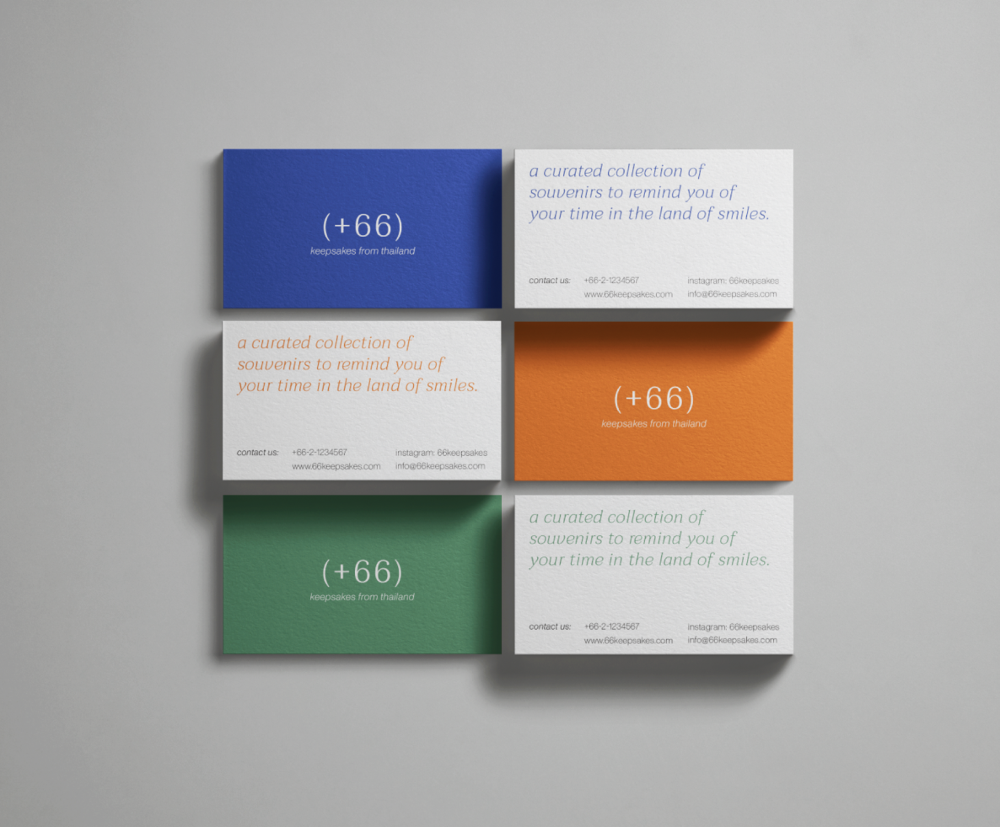
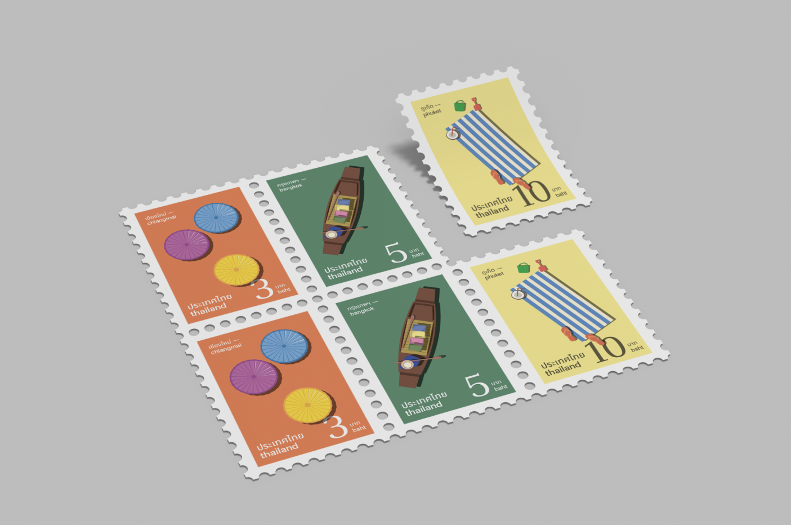
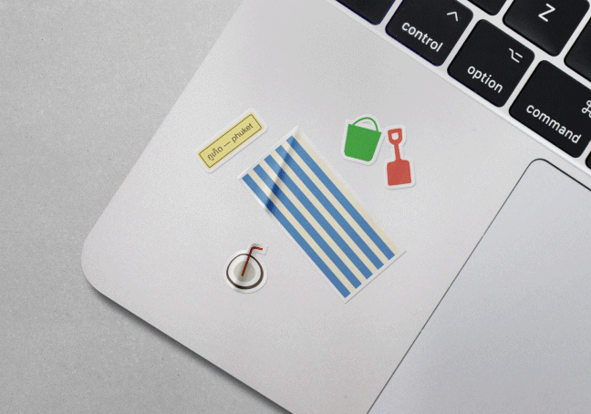

(+66)
branding / identity / packaging
branding and identity for a fictional brand that puts a modern spin on thai souvenirs. each collection of souvenirs is centered around a particular city in thailand, calling attention to the highlights of the city through the use of simple illustrations and bright colors.
Storefront window

Business Cards
Postal Stamps
Stickers
Landing page design for the Brooklyn Museum website, featuring the (in)tangible exhibition.
Merchandise/Retail